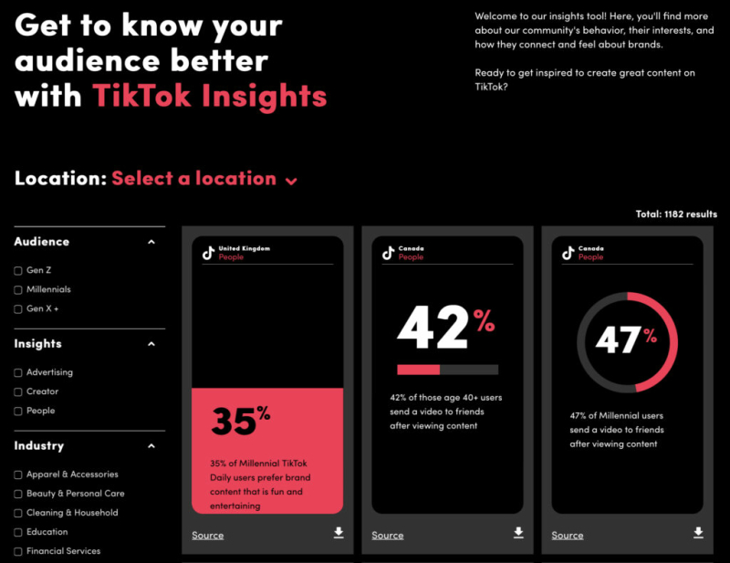
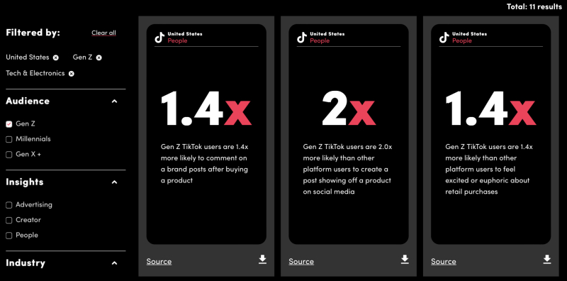
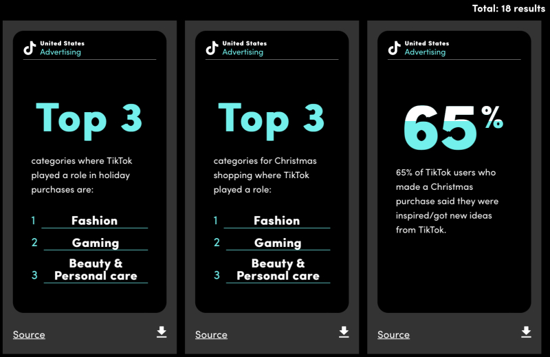

TikTok heeft een nieuwe tool gelanceerd die handige inzichten geeft aan marketeers. Met TikTok Insights krijg je inzicht in het gedrag van je publiek, evenals hun interesses en hoe ze denken over een merk.
Met tientallen filters kun je met TikTok Insights orde scheppen in de wirwar aan data en snel tot de inzichten komen die écht relevant zijn. TikTok Insights is gratis te gebruiken en daarmee een onmisbare extra tool voor bedrijven die gebruik maken van TikTok in hun marketing.
TikTok insights laat hapklare stukken data zien waarmee bedrijven hun marketingcampagnes verder kunnen verfijnen. Wanneer je TikTok Insights voor het eerst opent, verschijnt er een dashboard met verschillende tegels in beeld. Elk van deze tegels laat een stukje data zien.
Je kunt de tegels sorteren door filters in te stellen aan de linkerkant van je scherm. Je kunt de data die je ziet zo specifiek maken als je zelf wilt. Het is mogelijk om algemene data over Gen Z te bekijken, maar je kunt ook inzien hoe Amerikaanse Gen Z gebruikers reageren op marketing voor tech-producten.
Naast dat je kunt filteren op demografische gegevens en sectoren, kun je ook data bekijken rondom specifieke evenementen of feestdagen. Wil je bijvoorbeeld alvast je marketing voor Kerstmis plannen, dan kun je simpelweg de bijbehorende filter selecteren.

Onderaan elke tegel laat TikTok zien waar de data vandaan komt. Hiervoor hoef je enkel met je pijl op ‘Source’ te gaan staan.
Als je de data voor een artikel of verslag wilt gebruiken, kun je op ‘Source’ klikken om een kopie te maken van de citatie, zodat je deze rechtstreeks in je document kan plakken.
Op dit moment is er een beperkte hoeveelheid data beschikbaar. Als je te veel filters aanvinkt, kan het gebeuren dat er geen resultaten beschikbaar zijn. TikTok Insights heeft echter veel potentieel naarmate het na verloop van tijd steeds verder uitgebreid wordt.
Bron: Search Engine Journal.
Neem contact op